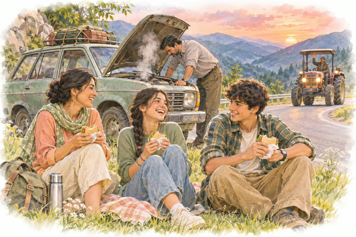

Listen to the text
Speed:

My father loves three things: our family, his old car and the word "if". Last July we drove from Vinnytsia to the Carpathians, and on the way I heard every kind of "if" that exists in the English textbook. It started before we left. "If you leave at six, you avoid the traffic," Dad announced at dinner. "It is a rule of the road." So he set the alarm for five. In the morning he checked the sky. "If it doesn't rain, we will be in Yaremche by two o'clock. If we get there by two, we will have time for the waterfall." Mum packed sandwiches. My sister packed three books and a cat toy, although we don't have a cat. Near Khmelnytskyi the car made a strange noise and stopped. Dad opened the bonnet and looked inside for a long time. "If I were a mechanic, I would know what this is," he said. "If we had a newer car, this wouldn't happen." Mum said nothing, which was very loud. A tractor driver pulled us to a garage in the nearest village. The mechanic, a boy who looked about sixteen, found the problem in five minutes. A small rubber pipe had cracked. "If you had checked it before the trip, you wouldn't have got stuck," he said politely. Dad's ears turned red. There was no such pipe in the village. We waited four hours until somebody brought one from town. During these four hours we ate all the sandwiches, my sister read two books, and the mechanic's grandmother fed us borshch and showed us her bees. It was, to tell the truth, the best part of the day. We reached Yaremche at nine in the evening. The waterfall was closed. "If we hadn't stopped, we would have seen it," said my sister. "If we hadn't stopped, we wouldn't have tasted that honey," said Mum. "If I had listened to your mother and checked the car, none of this would have happened," said Dad. It was the bravest sentence of his life. The next morning we saw the waterfall. It was beautiful. But when people ask me about that holiday, I tell them about the village, the borshch and the bees. If you travel by car with my father, you always come home with a story. That is a rule.
Tap any sentence to hear it again.
Сподобалось? На сайті ще більше матеріалів для вчителів!
Reader, презентації, ігри, діагностичні та контрольні роботи до підручників 1-11 класів.
Перейти на сайт materials.allaenglish.com